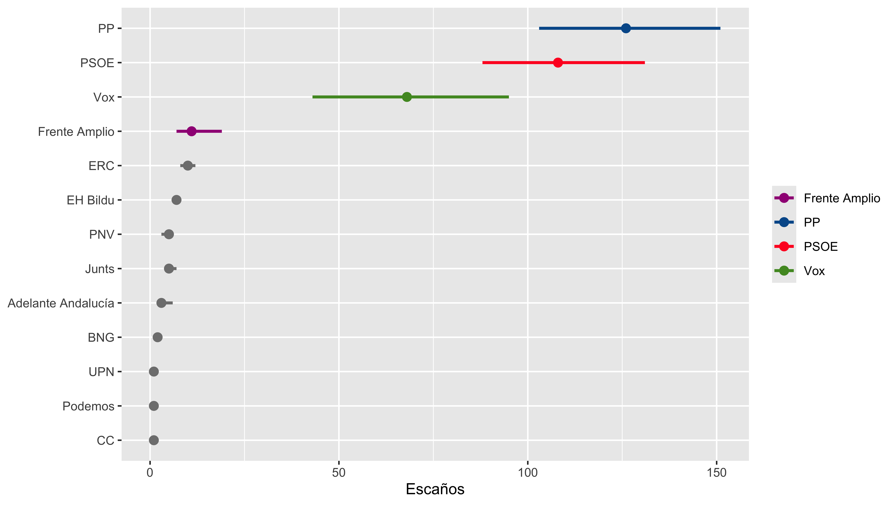

| Partido |
Voto latente
|
Con el error del consenso
|
||
|---|---|---|---|---|
| Mediana (%) | IC90 (%) | Mediana (%) | IC90 (%) | |
| PP | 31,5 | 29,6–33,0 | 30,6 | 25,8–35,8 |
| PSOE | 26,8 | 25,3–28,2 | 27,1 | 22,8–31,8 |
| Vox | 19,5 | 17,8–21,3 | 19,3 | 14,3–24,9 |
| Frente Amplio | 6,5 | 5,7–7,5 | 6,8 | 5,1–9,0 |
| Podemos | 2,4 | 1,7–3,2 | 2,5 | 1,6–3,7 |
| ERC | 2,1 | 1,9–2,4 | 2,1 | 1,8–2,4 |
| SALF | 1,9 | 1,4–2,6 | 1,9 | 1,4–2,6 |
| Junts | 1,3 | 1,2–1,5 | 1,3 | 1,1–1,5 |
| EH Bildu | 1,3 | 1,1–1,4 | 1,2 | 1,1–1,4 |
| PNV | 0,9 | 0,8–1,0 | 0,9 | 0,8–1,0 |
| BNG | 0,9 | 0,7–1,0 | 0,8 | 0,7–1,0 |
| CC | 0,4 | 0,4–0,5 | 0,4 | 0,4–0,5 |
| UPN | 0,2 | 0,1–0,2 | 0,2 | 0,1–0,2 |
| Resto | 4,1 | 2,6–6,8 | 4,1 | 2,5–6,7 |
Generales 2026: el pronóstico vivo del 29-N
2026
encuestas electorales
análisis bayesiano
Estado vivo del modelo bayesiano conjunto: tendencia del voto, escaños y probabilidad de mayoría. Se actualiza con cada encuesta nueva.
Esto es un meta-análisis de encuestas que hago por diversión. No trabajo para ningún medio ni tengo que acertar. Hay gente que hace cosas parecidas, y muy bien: Kiko Llaneras en El País, ciento76 u objetivo176. De sus tablas salen buena parte de las encuestas que uso.
Lo mío va por otro lado: todo es bayesiano. Las encuestas, el sesgo de cada casa y lo que fallan todas a la vez van en un solo modelo. Ese error común no lo pongo a ojo: lo estima el modelo con las elecciones pasadas. Y esa incertidumbre llega hasta cada escaño, simulación a simulación. Por eso las horquillas salen anchas.
En Generales 2026, todo bayesiano (I): el voto puedes ver como lo hice.
Esta página es el estado vivo de ese modelo, que normalmente actualizaré de vez en cuando, conforme vea que van saliendo encuests. El post técnico quedó congelado Con cada encuesta nueva se reajusta el modelo y se vuelve a renderizar esta página. Actualizado el 4 de noviembre de 2026, con las encuestas publicadas hasta el 1 de noviembre de 2026.
El voto el 29-N
El modelo da dos cifras de voto para el 29-N. El voto latente es la media de las casas encuestadoras, llevada hasta el día de la votación, dice qué cuentan las encuestas.
El voto con el error del consenso le suma lo que todas las casas pueden fallar a la vez, estimado con las elecciones pasadas. Los escaños y el voto provincial salen de este segundo. La mediana apenas cambia, pero el intervalo se abre: el IC90 del PP mide 3,4 puntos sin el error y 10,0 con él.
Tendencia

Escaños
Los escaños salen del escenario mapa: el voto nacional se reparte por provincias y, antes del D’Hondt, se aplican las candidaturas que de verdad se presentan en cada una. Las encuestas preguntan por partidos nacionales, pero a la izquierda del PSOE las listas cambian según el territorio:
- Podemos no se presenta en Barcelona, Girona, Lleida y Tarragona, por su acuerdo con ERC. Su voto se reparte en cada simulación con un sorteo centrado en 65 % para ERC, 30 % para el Frente Amplio y 5 % fuera (abstención u otros).
- El Frente Amplio no se presenta en Teruel: CHA-Frente Amplio retiró su lista el 21 de octubre. Su voto va a un sorteo centrado en 55 % para el PSOE y 45 % fuera.
- Adelante Andalucía se presenta sola en las 8 provincias andaluzas. Las encuestas nacionales no la miden, así que su voto sale de las autonómicas del 17 de mayo de 2026 (9,6 % en Andalucía), con incertidumbre en el paso de autonómicas a generales. Ese voto sale primero de “otros partidos” y después de Podemos y el Frente Amplio.

| Partido | Mediana | q05 | q95 |
|---|---|---|---|
| PP | 126 | 103 | 151 |
| PSOE | 108 | 88 | 131 |
| Vox | 68 | 43 | 95 |
| Frente Amplio | 11 | 7 | 19 |
| ERC | 10 | 8 | 12 |
| EH Bildu | 7 | 6 | 8 |
| Junts | 5 | 4 | 7 |
| PNV | 5 | 3 | 6 |
| Adelante Andalucía | 3 | 2 | 6 |
| BNG | 2 | 2 | 3 |
| CC | 1 | 1 | 1 |
| Podemos | 1 | 0 | 2 |
| UPN | 1 | 0 | 1 |
| SALF | 0 | 0 | 1 |
| Mayoría | Probabilidad |
|---|---|
| PP solo >= 176 | 0,2% |
| PP + VOX >= 176 | 94,6% |
| izquierda >= 176 | 3,9% |
Provincia a provincia
El modelo no tiene encuestas provinciales, pero sí tiene el voto nacional con el error del consenso y un patrón provincial: el del 23-J, ajustado con el shock de los regionales (ver el post donde cuento todo eso) y las reglas del mapa de listas. Con eso reparte el voto draw a draw entre las 52 provincias, y de ahí sale el D’Hondt. Las tres tablas miran esa distribución provincial: primero el voto, luego los escaños, y al final el escaño más reñido de cada provincia.
El voto. Mediana, en %, del voto (con el error del consenso) que cada familia recibe en cada provincia. Con el filtro se busca la que quieras; conviene leerlo como “a dónde va el voto”, no como encuesta provincial.
Los escaños. D’Hondt sobre el voto anterior, draw a draw, con el umbral legal del 3 % provincial. Para cada provincia y partido con opciones, los escaños en las 6.000 simulaciones. La media son los escaños esperados, y suma los de la provincia. La mediana y el IC90 son escaños enteros. La nota de debajo de la tabla explica por qué las medianas a veces no cuadran.
NotaPor qué las medianas no siempre suman los escaños
La mediana es el valor del medio de las 6.000 simulaciones, y se calcula para cada partido por separado. Por eso las medianas de varios partidos no tienen por qué sumar los escaños de la provincia. La media sí los suma: en cada simulación los escaños suman el total, y la media conserva esa suma.
Pasa cuando un escaño está muy disputado: ahora mismo, en 17 de las 52 provincias. Ejemplo: Ceuta reparte 1 escaño, pero sus medianas suman 0. Las medias de los partidos con más opciones son PP 0,5, Vox 0,4, PSOE 0,1.
Por eso la tabla se ordena por la media. La mediana y el IC90 dicen otra cosa: qué número entero de escaños es el típico para cada partido.
El escaño más reñido de cada provincia. El D’Hondt reparte los escaños uno a uno: cada escaño va al cociente más alto, que es el voto del partido dividido por los escaños que ya lleva conseguidos, más uno. El último escaño en caer es el más ajustado de la provincia. Con 6.000 simulaciones completas se puede mirar, en cada una, quién se queda ese escaño y qué partido se quedó más cerca de quitárselo; la tabla resume las combinaciones que aparecen en cada provincia y con qué frecuencia.
Cómo se lee. Gana la provincia es el partido con más escaños en ella; si dos empatan, el más votado. Un par como Vox-PP dice que el escaño más reñido acaba en manos de Vox y que el partido que más cerca estuvo de arrebatárselo fue el PP; el % de simulaciones dice cuántas veces ocurre eso. Dentro de una misma provincia, fíjate en si el que se lo lleva se repite en casi todas las filas o va alternando entre partidos. Cuando se repite, la provincia está sentenciada: en Melilla, PP se lleva el escaño más reñido en el 94 % de las simulaciones, sea cual sea el rival. Cuando alterna, ese escaño está en el aire, y es justo donde un pequeño movimiento de voto cambia el color de un escaño. El buscador de la tabla sirve para localizarlas: escribe un par concreto (por ejemplo, Vox-PP) y verás en qué provincias ese escaño está al alcance de los dos.
La última columna, Par con el voto mediano, es la cuenta que harías a mano: el D’Hondt sobre la mediana del voto de la tabla de arriba. Es un solo escenario y no tiene por qué coincidir con el par más frecuente. En Córdoba, con el voto mediano el par es PP-Vox, pero en las simulaciones el más frecuente es PSOE-PP (17,7 % de las simulaciones). El voto provincial simulado se mueve varios puntos de una simulación a otra, y con cocientes tan cercanos basta eso para cambiar quién se lleva el último escaño y quién se queda a las puertas.
Podemos ver la probabilidad de que cada partido se lleve el escaño más reñido de cada provincia, sumados todos los pares posibles, en %. El resto de partidos va en la última columna, cada uno con su nombre y su %. Las provincias van de más abierta a más sentenciada: arriba, escaños que nadie controla; abajo, favoritos claros.
Un ejemplo de provincia en juego, Granada: en 67 % de las simulaciones la gana PP, pero el escaño más reñido no está nada sentenciado: en el 18,5 % de las simulaciones se lo lleva PP con PSOE a las puertas, en el 17,5 % se lo lleva PSOE contra PP, y así hasta media docena de combinaciones distintas. Ese es el escaño que decidiría quién gana Granada si el voto se moviera un poco.
Las encuestas que entran
Las 34 encuestas de 2026 con los grandes partidos son la primera tabla, ordenadas por fecha. El modelo descarta las que no publican tamaño muestral, las del CIS y las de ElectoPanel, que es un panel continuo y solo entra en el reparto del bloque. La columna Regionales marca las que entran también con el desglose de los partidos regionales, que se rellena con el scraping de objetivo176 (con los arreglos curados a mano por encima). Debajo, las encuestas que no publican SALF (Sigma Dos, Winston, Ateneo del Dato, Data10). Todas separan Sumar y Podemos; lo que les falta es SALF, que es un partido de derechas. Sin SALF no se cierra el reparto de los siete partidos, así que entran con menos celdas: PP, PSOE, VOX, Sumar + Podemos y un resto con SALF, los regionales y otros. Algunas (Sigma Dos, Data10) también arrastran el desglose del bloque desde objetivo176.
¿Qué ha cambiado esta semana?
Con las encuestas hasta el 1 nov, frente a las de hasta el 25 oct: PP es quien más se mueve, pierde 2 escaños (de 128 a 126). La mayoría de PP y Vox pasa del 94,6 % al 94,6 %.
Que una encuesta nueva dé más al PP no quiere decir que lo empuje hacia arriba. El modelo corrige el sesgo de cada casa: si una casa suele dar al PP dos puntos más que la media, un 31 % suyo cuenta como un 29 %. Una casa nueva, con una sola encuesta, no da para estimar su sesgo: el modelo lo encoge hacia el de una casa media, y su única encuesta no suele mover mucho el voto latente.
| Hasta el 25 oct | Hasta el 1 nov | Cambio desde el 25 oct | |
|---|---|---|---|
| PP | 128 | 126 | −2 |
| PSOE | 108 | 108 | = |
| Vox | 66 | 68 | +2 |
| Frente Amplio | 11 | 11 | = |
| P(PP + Vox ≥ 176) | 94,6 % | 94,6 % | = pp |